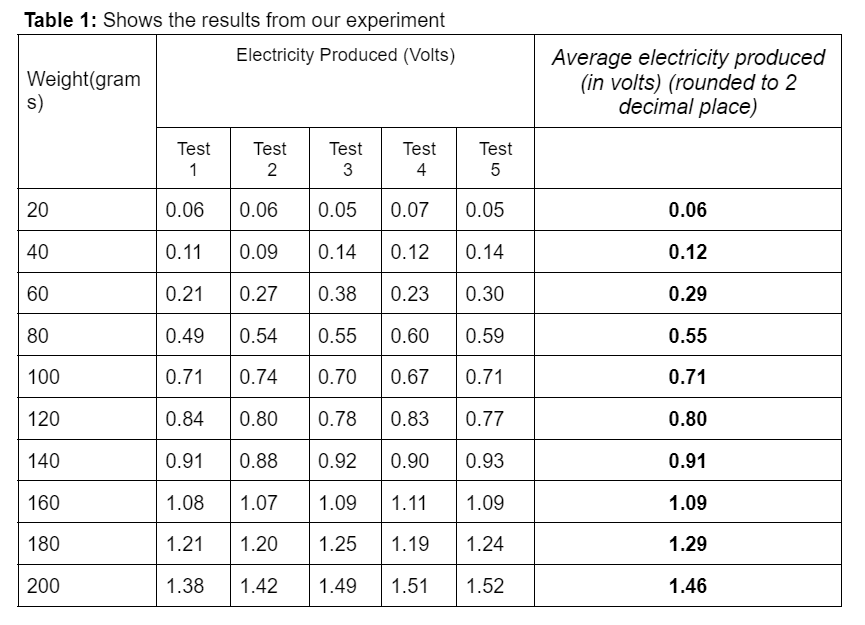
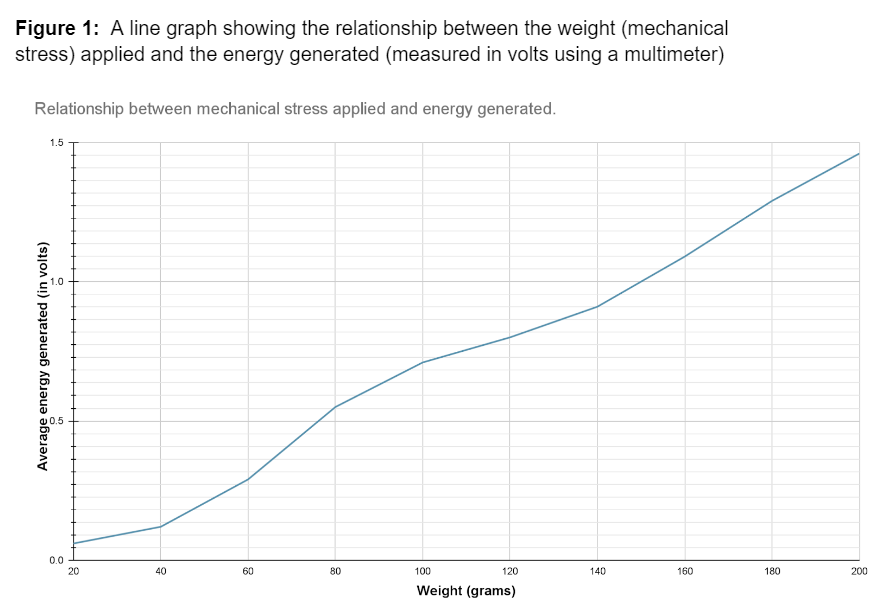

Results
Analysis and findings from our piezoelectric cells experiment.
Experimental Data
Below is the table summarizing the results of the experiment under varying conditions of mechanical stress (weight and impact height) and the corresponding electrical energy output:
Data Interpretation
From the data collected, it is evident that the energy output increases with both the weight applied and the impact height. The test with the highest weight (200 grams) resulted in the maximum energy output, showcasing the efficiency of piezoelectric cells in converting mechanical stress into electrical energy.
Our research (experiment values) and graph suggests that as mechanical stress increases, the energy generated also increases. For a 100-gram weight, an average amount of 0.71 volts was produced. Taking the average weight of a person as 60 kilograms, which is 60000 grams, the average amount of volts generated as they walk over the piezoelectric cell is 426 volts, which we assume as 400 volts (rounded to the nearest 100). 
These results have also led us to the conclusion that many other factors affect the amount of energy produced by the cells apart from the amount of weight used, such as the amount of time the weight was applied to the cell. Linking this other factor to the real-life scenario of our experiment, where a person’s weight is exerted onto the cell for less than a second per footstep while walking, we imitated a footstep of less than a second by applying constant force with a weight to resemble a human. With this prototype, we added in our values for results. The experiment we conducted successfully demonstrated the potential that piezoelectric cells have as a sustainable energy source, especially in devices such as streetlights and other small-scale urban installations. By generating mechanical energy from human activity, we were able to generate electricity that could be used to reduce our dependence on fossil fuels and decrease greenhouse gas emissions. Through the experiments we conducted, we found that the energy produced is directly proportional to the force applied to the cell.
Conclusion
Our experiment confirms the potential of piezoelectric cells to generate significant amounts of electrical energy from mechanical stress, particularly in high-impact environments. This finding supports the idea of using piezoelectric technology in areas with high foot or vehicle traffic to power streetlights and other infrastructure.
Improvement
While experimenting, we faced a few challenges. Firstly, we wished that we had a bigger piezoelectric cell so that our weights would properly fit. We couldn't exactly replicate real-life conditions, like the varied walking speeds or varied walking pressure, so to get a control variable, we decided the amount of time the weight would be kept on the cell. Thirdly, we might not have gotten completely accurate results considering human and random error while placing the weights on the cells, trying to make sure we kept it with the same amount of force and for the same amount of time. Fourthly, a constant problem we encountered was getting the soldering done on the cells. Another limitation was that we had a limited range of weight that was up to 200 grams, but in real life, people weigh on average 50, 60, and 70 kg (50,000 g, 60,000 g, 70,000 g), which could not be replicated in this experiment.
Implementation in the real world
The United States, Japan, and South Korea have already started using piezoelectric technology. Countries like the United Kingdom, India, China, and Canada are all countries with a focus or growing focus on renewable energy. All these countries have the technical, research, and financial capabilities to implement this piezoelectric technology into their existing urban infrastructure, particularly in their high-density metropolitan cities. This initiative towards exploring another renewable energy source will help these countries maintain and provide a more consistent, sustainable, and reliable power source. It will also help them meet their climate goals to modernise the country’s urban energy systems and enhance their energy efficiency. These piezoelectric systems could be integrated into the country's renewable energy strategies. These renewable energy sources can help each country to reduce the overall effects and consequences of climate change and global warming on the environment.